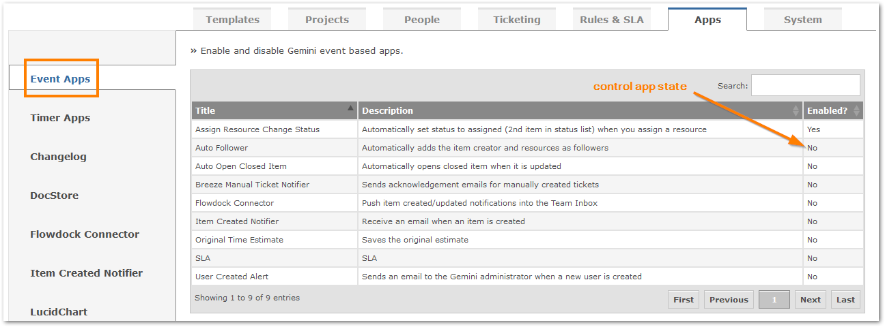

Event Apps
Event apps allow you to subscribe to Event Listeners and have the event apps invoked when something happens.
Configuration
Gemini Administrators can either enable or disable every Event App.

The Event Apps:
- Auto Mark As Assigned: Set the status to assigned (2nd item in status list) when you assign a resoure. Only works when the status is first item in status list and no resources have been assigned to the item.
- Auto Open Closed Item: Automatically opens a closed item when the item have been updated.
- Auto Watchers: Automatically adds the item creator and resoureces as follower of the item.
- Email on User Creation: Send an email to the Gemimi administartors when a new user is created.
- Flowdock: Every Gemini item updated or created will appear in Flowdock's Team Inbox. Flowdock setup guide located from here.